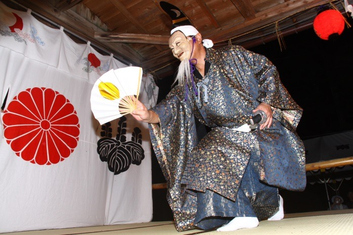

山形縣的文化
山形県の文化 \ Culture of Yamagata Prefecture
地方上的傳統演藝和習俗
由於人們堅定的信仰和與下一代建立聯繫的熱情，山形縣內各地有許多傳承不綴的表演藝術。 這些傳統之所以能夠長期維持，是由於農村社會自前近代以來以農業為中心的傳統風土，為了維繫村落共同體，生活和祭祀化為一體之故。
黑川能（鶴岡市）
黑川能在鎮守春日神社的氏子（農民）手中已經傳承了500多年 這些都是繼承了由世阿彌集大成的猿樂的命脈，唯皆不屬於能樂流派，而有獨特的傳承的庄內地方獨特的鄉土演藝。在五流（觀世、寶生、金剛、金春、喜多）中既已成為廢曲的謠曲，或是未被繼承的表演形式現今仍保存於此，持續傳承。 由於亦屬奉納神事，因此在表演能時，首先為了獲得春日神或氏神等大神的允准，要由神主祈禱後才開始舞能。 因此，能並非由玄人（專業）能樂師演出，包含囃子方在內習慣上皆由春日神社的氏子來擔任。
林家舞樂（河北町）
古文獻記載，貞觀二年（860年）立石寺開山時，大阪市四天王寺的樂人林越前守政照隨著圓仁來到東國，將四天王寺的舞樂傳到了山寺。 其後，他的後代每年都在山寺貢獻舞樂，在室町時代移居到慈恩寺（寒河江市），又在江戶時代初期移居到谷地，司掌山寺、慈恩寺、谷地八幡宮的舞樂至今。 由於林家舞樂很早就流傳到地方上，據說因此平安中期以後樂制改革（日本化）的影響較小，更保留了絲綢之路的面貌。 立石寺的臨時法會，在慈恩寺是五月五日的全經會，谷全地八幡宮是九月的例大祭時奉奏。
杉澤比山（遊佐町）
 杉澤比山是傳至遊佐町杉澤地區的番樂。所謂番樂，指是由山伏所舞的神樂，奉納給熊野神社。有關其起源尚無明確紀錄，但據信至少可以追溯到鎌倉時代，因為它保留了能樂大成以前的古老面貌。一般認為，在鳥海修驗的繁榮時期由修驗者所表演的舞蹈，隨著其衰退，從而在村民的手中傳承下來。有個說法指出，在過去的時代，鳥海山曾應對於月山有「日山」之稱，故可能是取傳於「日山（鳥海山）」的番樂之意，而稱為「日山（比山）番樂」。
寄身山寺的庶民信仰
相傳貞觀2年（860年）在清和天皇的勅命下由圓仁（慈覺大師）開山的寶珠山立石寺，是與慈恩寺齊名的古刹，以松尾芭蕉的「蟬聲穿透路旁石」的詩句而聞名於世。 這個地方的風俗是，有人死亡時，由親人將一部分骨灰，特別是牙骨放在「奧之院 」（頂上）的納骨庫中來供養，自古日本人就相信人死後靈魂會到附近的山上，在那裡保佑子孫和地區的安全。靈魂透過供養和節祭，會登上高山，最後昇上天堂。 還有一種說法，若忽視追悼將導致流行病和天災，並會帶來寒災並毀壞稻作。
傳統山形縣日常食材
 在昭和初期，稻米是山形縣的主要食品。自明治以來，作為商品作物的養蠶業興盛，由於這是一個積雪地帶，也不適合種植麥類，因此稻米補食作物的規模是達到了間作程度的規模。蘿蔔、蕪菁、茄子和黃瓜是作為冬季期間和稻作青黃不接時期的保存用來醃製，而芋頭和馬鈴薯則催生了「煮芋會」等活動。
由於除稻米以外的農作物很少，因此許多農作物都是從山區和河流採集的，這裡也可以看到和季節活動有關的饗宴美食。
在昭和初期，稻米是山形縣的主要食品。自明治以來，作為商品作物的養蠶業興盛，由於這是一個積雪地帶，也不適合種植麥類，因此稻米補食作物的規模是達到了間作程度的規模。蘿蔔、蕪菁、茄子和黃瓜是作為冬季期間和稻作青黃不接時期的保存用來醃製，而芋頭和馬鈴薯則催生了「煮芋會」等活動。
由於除稻米以外的農作物很少，因此許多農作物都是從山區和河流採集的，這裡也可以看到和季節活動有關的饗宴美食。
出羽三山的素食
出羽三山（月山、湯殿山、羽黒山）不僅在東北地方，甚至關東、北陸皆在其信仰圈內的修驗※聖地，相傳開山始祖為崇酸天皇之子，蜂子皇子。自繩文以來的自然信仰為起源，月山是山容本身，湯殿山是一塊有溫泉湧出的巨岩，羽黑山則以山頂的「鏡池」為御神體。在江戶時期，名叫八方七口的登山口和相連的街道都滿是參拜的民眾，據說在享保18年（1733年）參拜人數達到了15萬7千人。 在門前町所供應的素食，本是可以自給自足的山伏餐食，過去是當日收穫當日生吃，日後逐漸引進了煮熟的調理方法。他們似乎是尋找了即使是澀味重無法生吃，也能好好享用的方法，以醃製和烘乾來保存，用以招待客人。